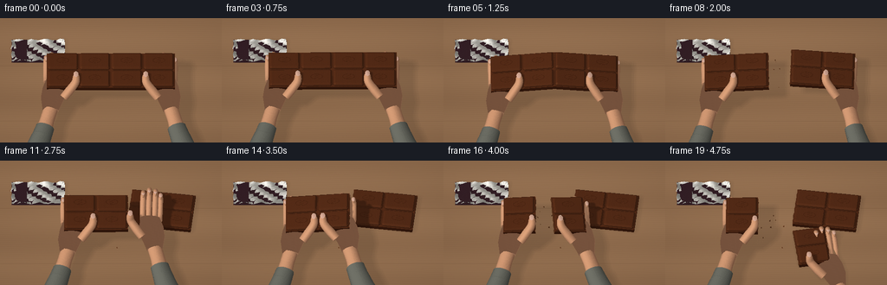
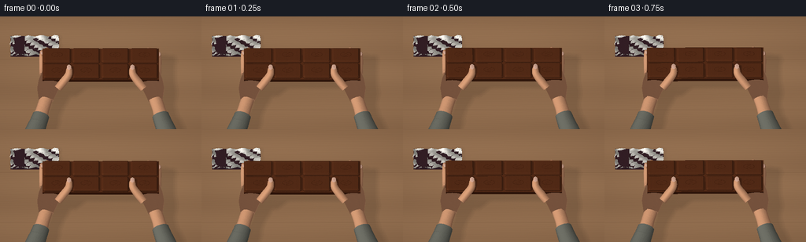
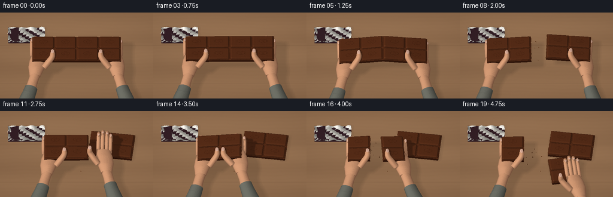

CODING AGENTS AS PIXEL WORLD MODELS
traex/GPT-6.1-Sol · motion_rationality_0010
点击播放 · 原生 RGB 像素
此结果可播放，但该运行尚未通过最终提交审核。页面展示不代表评测通过。
逐轮保存的候选
回放视频、检查图与代码变化。
每份候选均可单独播放。实际图片检查记录在下方工具轨迹中。
候选 01播放与检查图
点击播放 · 原生 RGB 像素


展开代码变化
--- 上一保存版本
+++ 本次保存版本
@@ -0,0 +1,422 @@
+"""Deterministic, hand-built RGB animation of a chocolate bar being snapped.
+Only mathematical meshes, a small numpy rasterizer, and procedural materials.
+"""
+from pathlib import Path
+import math
+import numpy as np
+from PIL import Image
+import artifact_io
+
+ROOT=Path(__file__).resolve().parent
+W,H=512,288
+rng=np.random.default_rng(21)
+
+def unit(a):
+ a=np.asarray(a,float)
+ return a/np.maximum(np.linalg.norm(a,axis=-1,keepdims=True),1e-12)
+
+class Mesh:
+ def __init__(self): self.v=[];self.n=[];self.f=[];self.m=[];self.tex=[]
+ def tri(self,a,b,c,mat,norm=None):
+ pts=np.array([a,b,c],float); start=len(self.v)
+ normal=unit(np.cross(pts[1]-pts[0],pts[2]-pts[0]))
+ self.v.extend(pts);self.tex.extend(pts)
+ self.n.extend([normal]*3 if norm is None else norm)
+ self.f.append([start,start+1,start+2]);self.m.append(mat)
+ def grid(self,pts,ns,mat,wrap=False):
+ ny,nx=pts.shape[:2]; start=len(self.v)
+ self.v.extend(pts.reshape(-1,3));self.tex.extend(pts.reshape(-1,3));self.n.extend(ns.reshape(-1,3))
+ for i in range(ny-1):
+ for j in range(nx if wrap else nx-1):
+ k=(j+1)%nx;a=start+i*nx+j;b=start+i*nx+k;c=start+(i+1)*nx+k;d=start+(i+1)*nx+j
+ self.f.extend([[a,b,c],[a,c,d]]);self.m.extend([mat,mat])
+ def arrays(self):
+ return tuple(np.asarray(v,dtype=(np.int32 if i in (2,3) else np.float32)) for i,v in enumerate([self.v,self.n,self.f,self.m,self.tex]))
+
+# Materials: 0 tabletop, 1 skin, 2 nails, 3 chocolate, 4 chocolate imprint,
+# 5 chocolate side, 6 snapped cocoa interior, 7 sweater, 8 cuff, 9 foil,
+# 10 plum wrapper, 11 crease, 12 nail free edge.
+
+def rot(y=0,z=0):
+ cy,sy=np.cos(y),np.sin(y);cz,sz=np.cos(z),np.sin(z)
+ return np.array([[cz,-sz,0],[sz,cz,0],[0,0,1]])@np.array([[cy,0,sy],[0,1,0],[-sy,0,cy]])
+
+def transform(mesh,R=np.eye(3),t=np.zeros(3),pivot=np.zeros(3)):
+ v,n,f,m,uv=mesh
+ return ((v-pivot)@R.T+pivot+t,n@R.T,f,m,uv)
+
+def combine(meshes):
+ vs=[];ns=[];fs=[];ms=[];uvs=[];offset=0
+ for v,n,f,m,uv in meshes:
+ vs.append(v);ns.append(n);fs.append(f+offset);ms.append(m);uvs.append(uv);offset+=len(v)
+ return np.concatenate(vs),np.concatenate(ns),np.concatenate(fs),np.concatenate(ms),np.concatenate(uvs)
+
+def bevel(m,x0,x1,y0,y1,z0,z1,b=.04,mat=3):
+ corner=.065
+ def ring(x0,x1,y0,y1,z,c):
+ return np.array([[x0+c,y0,z],[x1-c,y0,z],[x1,y0+c,z],[x1,y1-c,z],[x1-c,y1,z],[x0+c,y1,z],[x0,y1-c,z],[x0,y0+c,z]])
+ a=ring(x0,x1,y0,y1,z0,corner)
+ btm=ring(x0,x1,y0,y1,z1-b,corner)
+ top=ring(x0+b,x1-b,y0+b,y1-b,z1,max(.025,corner-b/2))
+ for u,v in [(a,btm),(btm,top)]:
+ for k in range(8):
+ j=(k+1)%8;m.tri(u[k],u[j],v[j],mat);m.tri(u[k],v[j],v[k],mat)
+ centre=top.mean(0);centre[2]+=.004
+ for k in range(8):
+ j=(k+1)%8;m.tri(top[k],top[j],centre,mat,norm=[(0,0,1)]*3)
+ m.tri(a[j],a[k],a.mean(0),5)
+
+# The two fracture profiles share a tessellation until they separate.
+def crack_x(x,y):
+ if abs(x)<1e-6 or abs(x+1.5)<1e-6:
+ return x+.018*np.sin(y*17+.7)+.009*np.sin(y*38)
+ return x
+
+def chocolate(x0,x1):
+ m=Mesh();ys=np.linspace(-1,1,13)
+ outline=[]
+ for y in ys: outline.append([crack_x(x1,y),y,0])
+ for y in ys[::-1]:outline.append([crack_x(x0,y),y,0])
+ outline=np.array(outline);top=outline.copy();top[:,2]=.205
+ cb=outline.mean(0);ct=top.mean(0)
+ for k in range(len(outline)):
+ j=(k+1)%len(outline)
+ cut=(k<12 and x1 in (-1.5,0)) or (13<=k<25 and x0 in (-1.5,0))
+ side=6 if cut else 5
+ m.tri(outline[k],outline[j],top[j],side);m.tri(outline[k],top[j],top[k],side)
+ m.tri(top[k],top[j],ct,3);m.tri(outline[j],outline[k],cb,5)
+ for col in range(round((x1-x0)/1.5)):
+ xc=x0+.75+1.5*col
+ for row in range(2):
+ yc=-.5+row
+ bevel(m,xc-.706,xc+.706,yc-.455,yc+.455,.202,.345,.068)
+ # Fine, pressed lozenge on each square, not a printed label.
+ n=24
+ for k in range(n):
+ th=2*np.pi*k/n;th2=2*np.pi*(k+1)/n
+ p=[xc+.29*np.cos(th),yc+.155*np.sin(th),.350]
+ q=[xc+.29*np.cos(th2),yc+.155*np.sin(th2),.350]
+ p2=[xc+.267*np.cos(th),yc+.139*np.sin(th),.351]
+ q2=[xc+.267*np.cos(th2),yc+.139*np.sin(th2),.351]
+ m.tri(p,q,q2,4,norm=[(0,0,1)]*3);m.tri(p,q2,p2,4,norm=[(0,0,1)]*3)
+ # two quiet diagonal marks evoke an embossed cocoa leaf
+ for offset in [-.07,.04]:
+ p=[xc-.115,yc+offset-.055,.352];q=[xc+.115,yc+offset+.055,.352]
+ m.tri(p,q,[q[0],q[1]+.018,q[2]],4,norm=[(0,0,1)]*3)
+ m.tri(p,[q[0],q[1]+.018,q[2]],[p[0],p[1]+.018,p[2]],4,norm=[(0,0,1)]*3)
+ return m.arrays()
+
+# Smooth swept surfaces. Fingers are jointed continuous surfaces rather than
+# independent floating balls. Curves use cubic Hermite interpolation.
+def curve(control,n=32):
+ p=np.asarray(control,float);t=np.linspace(0,len(p)-1,n)
+ k=np.minimum(t.astype(int),len(p)-2);u=t-k
+ tangent=np.empty_like(p);tangent[1:-1]=(p[2:]-p[:-2])/2;tangent[0]=p[1]-p[0];tangent[-1]=p[-1]-p[-2]
+ return (2*u**3-3*u**2+1)[:,None]*p[k]+(u**3-2*u**2+u)[:,None]*tangent[k]+(-2*u**3+3*u**2)[:,None]*p[k+1]+(u**3-u**2)[:,None]*tangent[k+1]
+
+def tube(m,points,radii,mat=1,n=28,sides=16,flatten=1):
+ p=curve(points,n);tangent=unit(np.gradient(p,axis=0));u=unit(np.cross(tangent,[0,0,1]));v=unit(np.cross(tangent,u))
+ rr=np.interp(np.linspace(0,1,n),np.linspace(0,1,len(radii)),radii)
+ th=np.arange(sides)*2*np.pi/sides
+ norms=unit(u[:,None,:]*np.cos(th)[None,:,None]+v[:,None,:]*np.sin(th)[None,:,None]/flatten)
+ pts=p[:,None,:]+rr[:,None,None]*(u[:,None,:]*np.cos(th)[None,:,None]+v[:,None,:]*np.sin(th)[None,:,None]*flatten)
+ m.grid(pts,norms,mat,wrap=True)
+ for j in range(sides):
+ k=(j+1)%sides;m.tri(p[0],pts[0,k],pts[0,j],mat);m.tri(p[-1],pts[-1,j],pts[-1,k],mat)
+
+def patch_nail(m,c,rx,ry,material=2):
+ # domed elliptical nail bed with a narrow ivory distal edge
+ nr,nt=5,24;pts=[];ns=[]
+ for ri in range(nr):
+ rad=.002+ri/(nr-1)
+ row=[];norm=[]
+ for j in range(nt):
+ a=2*np.pi*j/nt;x=rx*rad*np.cos(a);y=ry*rad*np.sin(a);z=.018*(1-rad**2)
+ row.append(np.array(c)+[x,y,z]);norm.append(unit([.036*x/(rx**2),.036*y/(ry**2),1]))
+ pts.append(row);ns.append(norm)
+ m.grid(np.array(pts),np.array(ns),material,True)
+ for j in range(4,9):
+ a=2*np.pi*j/24;b=2*np.pi*(j+1)/24
+ p=np.array(c)+[rx*np.cos(a),ry*np.sin(a),.002]
+ q=np.array(c)+[rx*np.cos(b),ry*np.sin(b),.002]
+ p2=np.array(c)+[rx*.93*np.cos(a),ry*.91*np.sin(a),.006]
+ q2=np.array(c)+[rx*.93*np.cos(b),ry*.91*np.sin(b),.006]
+ m.tri(p,q,q2,12,norm=[(0,0,1)]*3);m.tri(p,q2,p2,12,norm=[(0,0,1)]*3)
+
+def hand(sign,open_amount=0):
+ s=sign;m=Mesh()
+ # Palm cross sections, narrower at the wrist and finger bases.
+ ys=np.linspace(-2.03,-.26,17)
+ widths=np.interp(ys,[-2.03,-1.75,-1.28,-.73,-.26],[.37,.44,.57,.565,.46])
+ heights=np.interp(ys,[-2.03,-1.5,-.8,-.26],[.22,.32,.28,.20])
+ th=np.arange(28)*2*np.pi/28
+ pts=[];norm=[]
+ for y,wx,hz in zip(ys,widths,heights):
+ cx=s*(.37+.15*(-y-1));cz=-.16-.065*(-y-1)
+ pts.append(np.stack([cx+wx*np.cos(th),np.full(28,y),cz+hz*np.sin(th)],-1))
+ pts=np.array(pts)
+ du=np.roll(pts,-1,axis=1)-np.roll(pts,1,axis=1);dv=np.gradient(pts,axis=0)
+ ns=unit(np.cross(du,dv));m.grid(pts,ns,1,True)
+ # Short portions of exposed wrist, then the cuff and a knit sleeve.
+ tube(m,[[s*.53,-1.95,-.23],[s*.69,-2.5,-.30],[s*.84,-3.1,-.37]],[.345,.34,.38],1,n=14,sides=24,flatten=.73)
+ tube(m,[[s*.78,-2.88,-.36],[s*.95,-3.42,-.40]],[.435,.47],8,n=8,sides=28,flatten=.8)
+ tube(m,[[s*.94,-3.38,-.40],[s*1.22,-4.15,-.5],[s*1.65,-5.0,-.6]],[.47,.55,.61],7,n=18,sides=28,flatten=.82)
+ # Four long fingers run underneath the slab and curl over its far edge.
+ for j,dx in enumerate([-.42,-.14,.15,.40]):
+ xc=s*.32+dx
+ leng=[.85,1.02,.95,.75][j]
+ op=open_amount
+ ps=[[xc,-.38,-.17],[xc,-.02,-.22],[xc,.49+.18*op,-.16+.16*op],[xc,leng+.20*op,-.06+.18*op],[xc,leng+.055*op,.10+.19*op],[xc,leng-.22+.07*op,.075+.18*op]]
+ rad=[.125,.135,.14,.119,.104,.028]
+ if j==3:rad=[r*.86 for r in rad]
+ tube(m,ps,rad,1,n=26,sides=16,flatten=.86)
+ # The rear nails are only visible when the hand releases.
+ patch_nail(m,[xc,leng-.085+.1*op,.165+.18*op],.078,.119)
+ # Thumb opposition is the front, visible contact on each chocolate half.
+ ps=[[-s*.08,-1.41,-.03],[-s*.36,-1.13,.17],[-s*.63,-.82,.38],[-s*.67,-.53-.14*open_amount,.465+.15*open_amount],[-s*.65,-.30-.15*open_amount,.425+.15*open_amount]]
+ tube(m,ps,[.205,.215,.19,.16,.042],1,n=30,sides=22,flatten=.88)
+ patch_nail(m,[-s*.665,-.49-.14*open_amount,.600+.15*open_amount],.117,.164)
+ # Subtle skin folds at the thumb's interphalangeal joint.
+ for yy in [-.77,-.805]:
+ line=[[-s*.63-.105,yy,.489],[-s*.63,yy-.012,.510],[-s*.63+.095,yy,.489]]
+ tube(m,line,[.006,.007,.004],11,n=10,sides=6)
+ return m.arrays()
+
+A=chocolate(-3,-1.5);B=chocolate(-1.5,0);C=chocolate(0,3)
+HAND_L=hand(-1);HAND_R=hand(1)
+HAND_OPEN_R=hand(1,.9)
+
+# A little discarded open wrapper in the shallow background. Geometry is
+# folded, metallic inside, with dark paper outside; no onscreen text.
+def wrapper():
+ m=Mesh()
+ bevel(m,-4.65,-2.15,1.6,2.9,.005,.025,.015,10)
+ xx=np.linspace(-4.65,-2.17,14);yy=np.linspace(1.63,2.87,9)
+ pts=np.zeros((len(yy),len(xx),3))
+ for i,y in enumerate(yy):
+ for j,x in enumerate(xx):
+ edge=min(i,len(yy)-1-i,j,len(xx)-1-j)
+ z=.035+.035*np.sin(x*26+y*31)+.018*np.sin(x*52-y*20)
+ if edge==0:z+=.12*(.5+.5*np.sin(x*9+y*12))
+ pts[i,j]=[x+.04*np.sin(y*15)*(edge==0),y,z]
+ ns=unit(np.cross(np.gradient(pts,axis=1),np.gradient(pts,axis=0)));m.grid(pts,ns,9)
+ # A folded paper flap across one side of the silver liner.
+ p=[[-4.66,1.58,.035],[-3.95,1.60,.11],[-3.92,2.85,.10],[-4.65,2.90,.045]]
+ m.tri(p[0],p[1],p[2],10);m.tri(p[0],p[2],p[3],10)
+ return m.arrays()
+WRAPPER=wrapper()
+
+# Sparse settled crumbs in the wrapper vicinity.
+def crumb_mesh(scale,seed):
+ r=np.random.default_rng(seed);m=Mesh()
+ v=np.array([[-1,-.5,0],[.9,-.6,0],[.6,.8,0],[-.7,.65,0],[.1,0,1.15]],float)*scale
+ v[:,:2]*=r.uniform(.8,1.2,(5,2))
+ for a,b,c in [[0,1,4],[1,2,4],[2,3,4],[3,0,4],[0,3,2],[0,2,1]]:m.tri(v[a],v[b],v[c],6)
+ return m.arrays()
+CRUMBS=[crumb_mesh(rng.uniform(.025,.048),80+j) for j in range(14)]
+
+# Ortho macro camera, locked framing, photographic overhead-oblique angle.
+TARGET=np.array([0,0,.78]);BACK=unit([0,-8,11]);RIGHT=np.array([1.,0,0]);UP=unit(np.cross(BACK,RIGHT))
+VIEW=np.array([RIGHT,UP,BACK]);SPAN=10.4
+LIGHT=unit([-.55,-.42,1.]);LRIGHT=unit(np.cross([0,1,0],LIGHT));LUP=unit(np.cross(LIGHT,LRIGHT));LVIEW=np.array([LRIGHT,LUP,LIGHT]);LSIZE=384;LSPAN=12.8
+
+def project(v,view,target,span,w,h):
+ c=(v-target)@view.T
+ return np.stack([(c[:,0]/span+.5)*w,(.5-c[:,1]/(span*h/w))*h,c[:,2]],axis=1)
+
+# Simple local triangle rasterizer, writing geometric attributes before a
+# single vectorized lighting pass. No rendering libraries or external engine.
+def raster(scene,view,target,span,w,h,attributes=False,background=None):
+ vertices,normals,faces,mats,uv=scene
+ p=project(vertices,view,target,span,w,h)
+ if background is None:depth=np.full((h,w),-1e6,np.float32)
+ else:depth=background[0].copy()
+ if attributes:
+ normal=background[1].copy();world=background[2].copy();tex=world.copy();mat=background[3].copy()
+ for fi,face in enumerate(faces):
+ q=p[face]
+ xmin=max(0,int(np.floor(q[:,0].min())));xmax=min(w-1,int(np.ceil(q[:,0].max())))
+ ymin=max(0,int(np.floor(q[:,1].min())));ymax=min(h-1,int(np.ceil(q[:,1].max())))
+ if xmax<xmin or ymax<ymin:continue
+ x0,y0=q[0,:2];x1,y1=q[1,:2];x2,y2=q[2,:2]
+ det=(y1-y2)*(x0-x2)+(x2-x1)*(y0-y2)
+ if abs(det)<1e-7:continue
+ xx=np.arange(xmin,xmax+1)[None,:]+.5;yy=np.arange(ymin,ymax+1)[:,None]+.5
+ a=((y1-y2)*(xx-x2)+(x2-x1)*(yy-y2))/det
+ b=((y2-y0)*(xx-x2)+(x0-x2)*(yy-y2))/det;c=1-a-b
+ z=a*q[0,2]+b*q[1,2]+c*q[2,2]
+ area=(a>=-1e-5)&(b>=-1e-5)&(c>=-1e-5)
+ buf=depth[ymin:ymax+1,xmin:xmax+1]
+ mask=area&(z>buf)
+ if not mask.any():continue
+ buf[mask]=z[mask]
+ if attributes:
+ weights=np.stack([a[mask],b[mask],c[mask]],1)
+ iy,ix=np.nonzero(mask);iy+=ymin;ix+=xmin
+ normal[iy,ix]=weights@normals[face]
+ world[iy,ix]=weights@vertices[face]
+ tex[iy,ix]=weights@uv[face]
+ mat[iy,ix]=mats[fi]
+ if not attributes:return depth
+ return normal,world,tex,mat
+
+# Intersections of orthographic camera rays with the wood plane.
+xscreen=((np.arange(W)+.5)/W-.5)*SPAN
+yscreen=(.5-(np.arange(H)+.5)/H)*SPAN*H/W
+base=TARGET+ xscreen[None,:,None]*RIGHT+yscreen[:,None,None]*UP
+lam=-base[:,:,2]/BACK[2];TABLE_P=base+lam[:,:,None]*BACK
+TABLE_DEPTH=(TABLE_P-TARGET)@BACK
+TABLE_NORMAL=np.zeros((H,W,3),np.float32);TABLE_NORMAL[:,:,2]=1
+BG=(TABLE_DEPTH.astype(np.float32),TABLE_NORMAL,TABLE_P.astype(np.float32),np.zeros((H,W),np.int16))
+
+def shade(attrs,shadow):
+ n,p,uv,mat=attrs;n=unit(n)
+ lx=project(p.reshape(-1,3),LVIEW,np.array([0,0,.7]),LSPAN,LSIZE,LSIZE).reshape(H,W,3)
+ sx=lx[:,:,0];sy=lx[:,:,1];sz=lx[:,:,2]
+ occlusion=np.zeros((H,W),float)
+ # Percentage-closer area-light sampling; broad shadows on the table,
+ # narrower penumbras where the thumbs touch the bar.
+ radius=np.where(mat==0,3.6,1.15)
+ offsets=[(0,0),(-1,0),(1,0),(0,-1),(0,1),(-.7,-.7),(.7,-.7),(-.7,.7),(.7,.7)]
+ for dx,dy in offsets:
+ ix=np.clip((sx+dx*radius).astype(int),0,LSIZE-1);iy=np.clip((sy+dy*radius).astype(int),0,LSIZE-1)
+ occ=shadow[iy,ix]>sz+.023
+ occlusion+=occ/len(offsets)
+ nl=np.maximum(0,n@LIGHT)
+ diffuse=.52+.48*nl*(1-.65*occlusion)
+ half=unit(LIGHT+BACK);spec=np.maximum(0,n@half)
+ colour=np.zeros((H,W,3),float)
+ x,y,z=uv[:,:,0],uv[:,:,1],uv[:,:,2]
+ noise=(np.sin(x*137.3+y*74.9+z*157.1)*np.sin(y*187.7-z*101.3+x*93.4))
+ for mid in range(13):
+ mask=mat==mid
+ if not mask.any():continue
+ if mid==0:
+ # Fine long grain, occasional growth lines, understated plank seams.
+ grain=np.sin(y*71+1.8*np.sin(x*.57)+.5*np.sin(x*3.4+y*2))
+ grain2=np.sin(y*162+.8*np.sin(x*1.9)+.55*np.sin(x*5.2))
+ slow=3*np.sin(y*2.6)+2*np.sin(x*.3+y)
+ grooves=(np.abs(np.sin((y+1.8)*np.pi/3.2))<.012)
+ g=3*grain+1.1*grain2+slow+noise*.45-11*grooves
+ warm=np.array([150,113,81.])+g[:,:,None]*np.array([1,.87,.70])
+ c=warm*(.80+.20*nl*(1-.65*occlusion))[:,:,None]
+ elif mid==1:
+ variation=1.4*noise+1.3*np.sin(x*19+y*23)*np.sin(y*15+z*30)
+ basec=np.array([218,159,120])+variation[:,:,None]*np.array([1,.75,.6])
+ c=basec*diffuse[:,:,None]
+ # Warm, soft subsurface fill and small skin-oil highlights.
+ c+=((spec**32)*7*(1-.7*occlusion))[:,:,None]*[1,.91,.82]
+ c+=(1-nl)[:,:,None]*[5,0,-1]
+ elif mid in (2,12):
+ b=np.array([226,179,157]) if mid==2 else np.array([236,214,189])
+ c=b*diffuse[:,:,None]+((spec**46)*18*(1-occlusion))[:,:,None]
+ elif mid in (3,4,5,6):
+ b={3:[92,47,25],4:[76,37,18],5:[73,34,17],6:[115,69,39]}[mid]
+ v=noise*(2.1 if mid==6 else .65)
+ if mid==6:v+=4*np.sin(y*84+z*72)*np.sin(y*137-z*49)
+ c=(np.array(b)+v[:,:,None])*diffuse[:,:,None]
+ c+=((spec**38)*(16 if mid==3 else 7)*(1-.9*occlusion))[:,:,None]*[1,.88,.70]
+ elif mid in (7,8):
+ ribs=np.sin(y*94+x*6) if mid==8 else np.sin(x*95+z*16)*np.sin(y*89)
+ weave=2*np.sin(x*163+y*150)+2.2*ribs
+ c=(np.array([115,116,106])+weave[:,:,None])*diffuse[:,:,None]
+ elif mid==9:
+ c=np.array([176,173,165])*diffuse[:,:,None]+(spec**13*89)[:,:,None]
+ c+=noise[:,:,None]*3
+ elif mid==10:
+ c=np.array([56,33,40])*diffuse[:,:,None]+(spec**27*8)[:,:,None]
+ elif mid==11:
+ c=np.array([167,106,76])*diffuse[:,:,None]
+ colour[mask]=c[mask]
+ # Very light optical falloff, stable sensor texture, and warm soft grading.
+ yy,xx=np.mgrid[0:H,0:W];vig=1-.075*((xx-W*.5)/(W*.7))**2-.045*((yy-H*.46)/(H*.8))**2
+ colour*=vig[:,:,None]
+ colour=np.clip(colour,0,255)
+ return colour.astype(np.uint8)
+
+def smooth(t):
+ t=np.clip(t,0,1);return t*t*(3-2*t)
+
+def interp(keys,i):
+ for j in range(len(keys)-1):
+ if keys[j][0]<=i<=keys[j+1][0]:
+ t=smooth((i-keys[j][0])/(keys[j+1][0]-keys[j][0]))
+ return np.array(keys[j][1])*(1-t)+np.array(keys[j+1][1])*t
+ return np.array(keys[0 if i<keys[0][0] else -1][1],float)
+
+# Piece transforms are recorded continuously, including the interval when a
+# hand releases the right half. Pieces on the table never move again.
+def poses(i):
+ zb=interp([(0,1.35),(3,1.43),(6,1.47),(8,1.40),(12,1.42),(19,1.36)],i).item()
+ leftt=interp([(0,[0,0,0]),(6,[0,0,0]),(7,[-.30,-.015,0]),(8,[-.36,0,0]),(11,[.8,0,0]),(14,[.8,0,0]),(16,[.61,-.06,0]),(19,[.65,-.1,0])],i)
+ leftt[2]+=zb
+ a1=interp([(0,0),(3,0),(5,-.11),(6,-.205),(7,-.11),(9,-.025),(12,0),(14,-.115),(15,-.22),(16,-.10),(19,-.03)],i).item()
+ leftR=rot(a1,.012*np.sin(i*.28));leftpivot=np.array([-1.5 if i>=12 else 0,0,.20])
+ # Until the second break the left two columns use the identical rigid pose.
+ if i<=14:bt=leftt.copy();br=leftR.copy();bp=leftpivot.copy()
+ else:
+ bt=interp([(14,[.8,0,1.42]),(15,[1.03,-.02,1.45]),(16,[1.43,-.08,1.35]),(17,[2.0,-.48,.83]),(18,[2.43,-1.05,.11]),(19,[2.43,-1.05,.018])],i)
+ aa=interp([(14,.115),(15,.23),(16,.10),(18,0),(19,0)],i).item()
+ az=interp([(14,0),(16,.08),(18,.15),(19,.15)],i).item();br=rot(aa,az);bp=np.array([-1.5,0,.2])
+ ct=interp([(0,[0,0,1.35]),(3,[0,0,1.43]),(6,[0,0,1.47]),(7,[.36,.025,1.47]),(8,[.69,.39,1.13]),(9,[.85,1.18,.33]),(10,[.88,1.35,.02]),(19,[.88,1.35,.02])],i)
+ ca=interp([(0,0),(3,0),(5,.11),(6,.205),(7,.14),(8,.07),(10,0),(19,0)],i).item()
+ cz=interp([(0,0),(7,0),(10,-.12),(19,-.12)],i).item()
+ return (leftR,leftt,leftpivot),(br,bt,bp),(rot(ca,cz),ct,np.array([0,0,.2]))
+
+def map_point(p,pose):
+ R,t,pivot=pose;return (np.array(p)-pivot)@R.T+pivot+t
+
+def hand_at(mesh,pose,anchor):
+ R,t,pivot=pose
+ return transform(mesh,R,map_point(anchor,pose))
+
+frames=[]
+for i in range(20):
+ pa,pb,pc=poses(i)
+ scene=[transform(A,*pa),transform(B,*pb),transform(C,*pc),WRAPPER]
+ # The left hand stays attached to the same leftmost square throughout.
+ scene.append(hand_at(HAND_L,pa,[-2.30,0,0]))
+ if i<=9:
+ scene.append(hand_at(HAND_R,pc,[2.30,0,0]))
+ elif i==10:
+ scene.append(hand_at(HAND_OPEN_R,pc,[2.30,-.015,.12]))
+ elif i==11:
+ # Return in a single continuous reaching arc, not a hand teleport.
+ end=map_point([-.55,0,0],pb);start=map_point([2.30,0,.12],pc)
+ anchor=.46*start+.54*end+np.array([0,-.22,.44])
+ scene.append(transform(HAND_OPEN_R,rot(0,-.03),anchor))
+ elif i<=18:
+ scene.append(hand_at(HAND_R,pb,[-.55,0,0]))
+ else:
+ scene.append(hand_at(HAND_OPEN_R,pb,[-.35,-.32,.12]))
+ # Old crumbs near the discarded wrapper.
+ for j in range(3):
+ scene.append(transform(CRUMBS[j],rot(0,j),[-2.15+j*.22,1.52-j*.10,.026]))
+ # Each fracture releases a few crumbs, moving ballistically, then settling.
+ for event,cut,px in [(7,0,-.01),(15,-1.5,.82)]:
+ if i<event:continue
+ dt=(i-event)/4
+ for k in range(5):
+ seed=event*10+k;r=np.random.default_rng(seed)
+ vx=r.uniform(-.8,.8);vy=r.uniform(-.5,.7);vz=r.uniform(.15,.65)
+ height=1.45+vz*dt-4.9*dt*dt
+ fall=(vz+math.sqrt(vz*vz+4*4.9*1.42))/(2*4.9)
+ tau=min(dt,fall)
+ pos=[cut+px+vx*tau,r.uniform(-.8,.8)+vy*tau,max(.022,height)]
+ scene.append(transform(CRUMBS[4+k+(0 if event==7 else 5)],rot(tau*4,tau*3),pos))
+ joined=combine(scene)
+ shadow=raster(joined,LVIEW,np.array([0,0,.7]),LSPAN,LSIZE,LSIZE)
+ attrs=raster(joined,VIEW,TARGET,SPAN,W,H,True,BG)
+ rgb=shade(attrs,shadow)
+ im=Image.fromarray(rgb).resize((256,144),Image.Resampling.LANCZOS)
+ frames.append(np.asarray(im))
+ print(f'Rendered {i+1}/20',flush=True)
+frames=np.stack(frames).astype(np.uint8)
+artifact_io.save(frames,ROOT)
+# A conventional RGB movie is provided alongside the required lossless frames.
+try:
+ import imageio.v2 as imageio
+ imageio.mimwrite(ROOT/'video.mp4',frames,fps=4,codec='libx264',quality=9,macro_block_size=1,pixelformat='yuv420p')
+except Exception as e:
+ print('Optional MP4:',e)
+print('Saved required RGB artifacts.',flush=True)
候选 02播放与检查图
点击播放 · 原生 RGB 像素

展开代码变化
--- 上一保存版本
+++ 本次保存版本
@@ -156,7 +156,7 @@
pts.append(np.stack([cx+wx*np.cos(th),np.full(28,y),cz+hz*np.sin(th)],-1))
pts=np.array(pts)
du=np.roll(pts,-1,axis=1)-np.roll(pts,1,axis=1);dv=np.gradient(pts,axis=0)
- ns=unit(np.cross(du,dv));m.grid(pts,ns,1,True)
+ ns=unit(np.cross(dv,du));m.grid(pts,ns,1,True)
# Short portions of exposed wrist, then the cuff and a knit sleeve.
tube(m,[[s*.53,-1.95,-.23],[s*.69,-2.5,-.30],[s*.84,-3.1,-.37]],[.345,.34,.38],1,n=14,sides=24,flatten=.73)
tube(m,[[s*.78,-2.88,-.36],[s*.95,-3.42,-.40]],[.435,.47],8,n=8,sides=28,flatten=.8)
@@ -379,16 +379,18 @@
if i<=9:
scene.append(hand_at(HAND_R,pc,[2.30,0,0]))
elif i==10:
- scene.append(hand_at(HAND_OPEN_R,pc,[2.30,-.015,.12]))
+ scene.append(hand_at(HAND_OPEN_R,pc,[2.30,-.30,.46]))
elif i==11:
# Return in a single continuous reaching arc, not a hand teleport.
- end=map_point([-.55,0,0],pb);start=map_point([2.30,0,.12],pc)
+ end=map_point([-.55,0,0],pb);start=map_point([2.30,-.30,.46],pc)
anchor=.46*start+.54*end+np.array([0,-.22,.44])
scene.append(transform(HAND_OPEN_R,rot(0,-.03),anchor))
- elif i<=18:
+ elif i<=17:
scene.append(hand_at(HAND_R,pb,[-.55,0,0]))
+ elif i==18:
+ scene.append(hand_at(HAND_OPEN_R,pb,[-.55,-.18,.37]))
else:
- scene.append(hand_at(HAND_OPEN_R,pb,[-.35,-.32,.12]))
+ scene.append(hand_at(HAND_OPEN_R,pb,[-.30,-.57,.54]))
# Old crumbs near the discarded wrapper.
for j in range(3):
scene.append(transform(CRUMBS[j],rot(0,j),[-2.15+j*.22,1.52-j*.10,.026]))
可观测工具轨迹
实际执行的命令与返回图片。
命令 1exit 0
/bin/bash -lc 'ls -la && cat prompt.txt && cat GENERATION_RULES.md && cat task_spec.json'
命令 2exit 0
/bin/bash -lc "cat artifact_io.py && python - <<'PY' import importlib.util for p in ['numpy','PIL','scipy']: print(p, bool(importlib.util.find_spec(p))) PY"
命令 3exit 0
/bin/bash -lc "python - <<'PY' import importlib.util for p in ['numba', 'imageio','imageio_ffmpeg','cv2']: print(p, bool(importlib.util.find_spec(p))) PY"
命令 4exit 1
/bin/bash -lc "cat > generate.py <<'PY'
\"\"\"Deterministic, hand-built RGB animation of a chocolate bar being snapped.
Only mathematical meshes, a small numpy rasterizer, and procedural materials.
\"\"\"
from pathlib import Path
import math
import numpy as np
from PIL import Image
import artifact_io
ROOT=Path(__file__).resolve().parent
W,H=512,288
rng=np.random.default_rng(21)
def unit(a):
a=np.asarray(a,float)
return a/np.maximum(np.linalg.norm(a,axis=-1,keepdims=True),1e-12)
class Mesh:
def __init__(self): self.v=[];self.n=[];self.f=[];self.m=[];self.tex=[]
def tri(self,a,b,c,mat,norm=None):
pts=np.array([a,b,c],float); start=len(self.v)
normal=unit(np.cross(pts[1]-pts[0],pts[2]-pts[0]))
self.v.extend(pts);self.tex.extend(pts)
self.n.extend([normal]*3 if norm is None else norm)
self.f.append([start,start+1,start+2]);self.m.append(mat)
def grid(self,pts,ns,mat,wrap=False):
ny,nx=pts.shape[:2]; start=len(self.v)
self.v.extend(pts.reshape(-1,3));self.tex.extend(pts.reshape(-1,3));self.n.extend(ns.reshape(-1,3))
for i in range(ny-1):
for j in range(nx if wrap else nx-1):
k=(j+1)%nx;a=start+i*nx+j;b=start+i*nx+k;c=start+(i+1)*nx+k;d=start+(i+1)*nx+j
self.f.extend([[a,b,c],[a,c,d]]);self.m.extend([mat,mat])
def arrays(self):
return tuple(np.asarray(v,dtype=(np.int32 if i in (2,3) else np.float32)) for i,v in enumerate([self.v,self.n,self.f,self.m,self.tex]))
# Materials: 0 tabletop, 1 skin, 2 nails, 3 chocolate, 4 chocolate imprint,
# 5 chocolate side, 6 snapped cocoa interior, 7 sweater, 8 cuff, 9 foil,
# 10 plum wrapper, 11 crease, 12 nail free edge.
def rot(y=0,z=0):
cy,sy=np.cos(y),np.sin(y);cz,sz=np.cos(z),np.sin(z)
return np.array([[cz,-sz,0],[sz,cz,0],[0,0,1]])@np.array([[cy,0,sy],[0,1,0],[-sy,0,cy]])
def transform(mesh,R=np.eye(3),t=np.zeros(3),pivot=np.zeros(3)):
v,n,f,m,uv=mesh
return ((v-pivot)@R.T+pivot+t,n@R.T,f,m,uv)
def combine(meshes):
vs=[];ns=[];fs=[];ms=[];uvs=[];offset=0
for v,n,f,m,uv in meshes:
vs.append(v);ns.append(n);fs.append(f+offset);ms.append(m);uvs.append(uv);offset+=len(v)
return np.concatenate(vs),np.concatenate(ns),np.concatenate(fs),np.concatenate(ms),np.concatenate(uvs)
def bevel(m,x0,x1,y0,y1,z0,z1,b=.04,mat=3):
corner=.065
def ring(x0,x1,y0,y1,z,c):
return np.array([[x0+c,y0,z],[x1-c,y0,z],[x1,y0+c,z],[x1,y1-c,z],[x1-c,y1,z],[x0+c,y1,z],[x0,y1-c,z],[x0,y0+c,z]])
a=ring(x0,x1,y0,y1,z0,corner)
btm=ring(x0,x1,y0,y1,z1-b,corner)
top=ring(x0+b,x1-b,y0+b,y1-b,z1,max(.025,corner-b/2))
for u,v in [(a,btm),(btm,top)]:
for k in range(8):
j=(k+1)%8;m.tri(u[k],u[j],v[j],mat);m.tri(u[k],v[j],v[k],mat)
centre=top.mean(0);centre[2]+=.004
for k in range(8):
j=(k+1)%8;m.tri(top[k],top[j],centre,mat,norm=[(0,0,1)]*3)
m.tri(a[j],a[k],a.mean(0),5)
# The two fracture profiles share a tessellation until they separate.
def crack_x(x,y):
if abs(x)<1e-6 or abs(x+1.5)<1e-6:
return x+.018*np.sin(y*17+.7)+.009*np.sin(y*38)
return x
def chocolate(x0,x1):
m=Mesh();ys=np.linspace(-1,1,13)
outline=[]
for y in ys: outline.append([crack_x(x1,y),y,0])
for y in ys[::-1]:outline.append([crack_x(x0,y),y,0])
outline=np.array(outline);top=outline.copy();top[:,2]=.205
cb=outline.mean(0);ct=top.mean(0)
for k in range(len(outline)):
j=(k+1)%len(outline)
cut=(k<12 and x1 in (-1.5,0)) or (13<=k<25 and x0 in (-1.5,0))
side=6 if cut else 5
m.tri(outline[k],outline[j],top[j],side);m.tri(outline[k],top[j],top[k],side)
m.tri(top[k],top[j],ct,3);m.tri(outline[j],outline[k],cb,5)
for col in range(round((x1-x0)/1.5)):
xc=x0+.75+1.5*col
for row in range(2):
yc=-.5+row
bevel(m,xc-.706,xc+.706,yc-.455,yc+.455,.202,.345,.068)
# Fine, pressed lozenge on each square, not a printed label.
n=24
for k in range(n):
th=2*np.pi*k/n;th2=2*np.pi*(k+1)/n
p=[xc+.29*np.cos(th),yc+.155*np.sin(th),.350]
q=[xc+.29*np.cos(th2),yc+.155*np.sin(th2),.350]
p2=[xc+.267*np.cos(th),yc+.139*np.sin(th),.351]
q2=[xc+.267*np.cos(th2),yc+.139*np.sin(th2),.351]
m.tri(p,q,q2,4,norm=[(0,0,1)]*3);m.tri(p,q2,p2,4,norm=[(0,0,1)]*3)
# two quiet diagonal marks evoke an embossed cocoa leaf
for offset in [-.07,.04]:
p=[xc-.115,yc+offset-.055,.352];q=[xc+.115,yc+offset+.055,.352]
m.tri(p,q,[q[0],q[1]+.018,q[2]],4,norm=[(0,0,1)]*3)
m.tri(p,[q[0],q[1]+.018,q[2]],[p[0],p[1]+.018,p[2]],4,norm=[(0,0,1)]*3)
return m.arrays()
# Smooth swept surfaces. Fingers are jointed continuous surfaces rather than
# independent floating balls. Curves use cubic Hermite interpolation.
def curve(control,n=32):
p=np.asarray(control,float);t=np.linspace(0,len(p)-1,n)
k=np.minimum(t.astype(int),len(p)-2);u=t-k
tangent=np.empty_like(p);tangent[1:-1]=(p[2:]-p[:-2])/2;tangent[0]=p[1]-p[0];tangent[-1]=p[-1]-p[-2]
return (2*u**3-3*u**2+1)[:,None]*p[k]+(u**3-2*u**2+u)[:,None]*tangent[k]+(-2*u**3+3*u**2)[:,None]*p[k+1]+(u**3-u**2)[:,None]*tangent[k+1]
def tube(m,points,radii,mat=1,n=28,sides=16,flatten=1):
p=curve(points,n);tangent=unit(np.gradient(p,axis=0));u=unit(np.cross(tangent,[0,0,1]));v=unit(np.cross(tangent,u))
rr=np.interp(np.linspace(0,1,n),np.linspace(0,1,len(radii)),radii)
th=np.arange(sides)*2*np.pi/sides
norms=unit(u[:,None,:]*np.cos(th)[None,:,None]+v[:,None,:]*np.sin(th)[None,:,None]/flatten)
pts=p[:,None,:]+rr[:,None,None]*(u[:,None,:]*np.cos(th)[None,:,None]+v[:,None,:]*np.sin(th)[None,:,None]*flatten)
m.grid(pts,norms,mat,wrap=True)
for j in range(sides):
k=(j+1)%sides;m.tri(p[0],pts[0,k],pts[0,j],mat);m.tri(p[-1],pts[-1,j],pts[-1,k],mat)
def patch_nail(m,c,rx,ry,material=2):
# domed elliptical nail bed with a narrow ivory distal edge
nr,nt=5,24;pts=[];ns=[]
for ri in range(nr):
rad=.002+ri/(nr-1)
row=[];norm=[]
for j in range(nt):
a=2*np.pi*j/nt;x=rx*rad*np.cos(a);y=ry*rad*np.sin(a);z=.018*(1-rad**2)
row.append(np.array(c)+[x,y,z]);norm.append(unit([.036*x/(rx**2),.036*y/(ry**2),1]))
pts.append(row);ns.append(norm)
m.grid(np.array(pts),np.array(ns),material,True)
for j in range(4,9):
a=2*np.pi*j/24;b=2*np.pi*(j+1)/24
p=np.array(c)+[rx*np.cos(a),ry*np.sin(a),.002]
q=np.array(c)+[rx*np.cos(b),ry*np.sin(b),.002]
p2=np.array(c)+[rx*.93*np.cos(a),ry*.91*np.sin(a),.006]
q2=np.array(c)+[rx*.93*np.cos(b),ry*.91*np.sin(b),.006]
m.tri(p,q,q2,12,norm=[(0,0,1)]*3);m.tri(p,q2,p2,12,norm=[(0,0,1)]*3)
def hand(sign,open_amount=0):
s=sign;m=Mesh()
# Palm cross sections, narrower at the wrist and finger bases.
ys=np.linspace(-2.03,-.26,17)
widths=np.interp(ys,[-2.03,-1.75,-1.28,-.73,-.26],[.37,.44,.57,.565,.46])
heights=np.interp(ys,[-2.03,-1.5,-.8,-.26],[.22,.32,.28,.20])
th=np.arange(28)*2*np.pi/28
pts=[];norm=[]
for y,wx,hz in zip(ys,widths,heights):
cx=s*(.37+.15*(-y-1));cz=-.16-.065*(-y-1)
pts.append(np.stack([cx+wx*np.cos(th),np.full(28,y),cz+hz*np.sin(th)],-1))
pts=np.array(pts)
du=np.roll(pts,-1,axis=1)-np.roll(pts,1,axis=1);dv=np.gradient(pts,axis=0)
ns=unit(np.cross(du,dv));m.grid(pts,ns,1,True)
# Short portions of exposed wrist, then the cuff and a knit sleeve.
tube(m,[[s*.53,-1.95,-.23],[s*.69,-2.5,-.30],[s*.84,-3.1,-.37]],[.345,.34,.38],1,n=14,sides=24,flatten=.73)
tube(m,[[s*.78,-2.88,-.36],[s*.95,-3.42,-.40]],[.435,.47],8,n=8,sides=28,flatten=.8)
tube(m,[[s*.94,-3.38,-.40],[s*1.22,-4.15,-.5],[s*1.65,-5.0,-.6]],[.47,.55,.61],7,n=18,sides=28,flatten=.82)
# Four long fingers run underneath the slab and curl over its far edge.
for j,dx in enumerate([-.42,-.14,.15,.40]):
xc=s*.32+dx
leng=[.85,1.02,.95,.75][j]
op=open_amount
ps=[[xc,-.38,-.17],[xc,-.02,-.22],[xc,.49+.18*op,-.16+.16*op],[xc,leng+.20*op,-.06+.18*op],[xc,leng+.055*op,.10+.19*op],[xc,leng-.22+.07*op,.075+.18*op]]
rad=[.125,.135,.14,.119,.104,.028]
if j==3:rad=[r*.86 for r in rad]
tube(m,ps,rad,1,n=26,sides=16,flatten=.86)
# The rear nails are only visible when the hand releases.
patch_nail(m,[xc,leng-.085+.1*op,.165+.18*op],.078,.119)
# Thumb opposition is the front, visible contact on each chocolate half.
ps=[[-s*.08,-1.41,-.03],[-s*.36,-1.13,.17],[-s*.63,-.82,.38],[-s*.67,-.53-.14*open_amount,.465+.15*open_amount],[-s*.65,-.30-.15*open_amount,.425+.15*open_amount]]
tube(m,ps,[.205,.215,.19,.16,.042],1,n=30,sides=22,flatten=.88)
patch_nail(m,[-s*.665,-.49-.14*open_amount,.600+.15*open_amount],.117,.164)
# Subtle skin folds at the thumb's interphalangeal joint.
for yy in [-.77,-.805]:
line=[[-s*.63-.105,yy,.489],[-s*.63,yy-.012,.510],[-s*.63+.095,yy,.489]]
tube(m,line,[.006,.007,.004],11,n=10,sides=6)
return m.arrays()
A=chocolate(-3,-1.5);B=chocolate(-1.5,0);C=chocolate(0,3)
HAND_L=hand(-1);HAND_R=hand(1)
HAND_OPEN_R=hand(1,.9)
# A little discarded open wrapper in the shallow background. Geometry is
# folded, metallic inside, with dark paper outside; no onscreen text.
def wrapper():
m=Mesh()
bevel(m,-4.65,-2.15,1.6,2.9,.005,.025,.015,10)
xx=np.linspace(-4.65,-2.17,14);yy=np.linspace(1.63,2.87,9)
pts=np.zeros((len(yy),len(xx),3))
for i,y in enumerate(yy):
for j,x in enumerate(xx):
edge=min(i,len(yy)-1-i,j,len(xx)-1-j)
z=.035+.035*np.sin(x*26+y*31)+.018*np.sin(x*52-y*20)
if edge==0:z+=.12*(.5+.5*np.sin(x*9+y*12))
pts[i,j]=[x+.04*np.sin(y*15)*(edge==0),y,z]
ns=unit(np.cross(np.gradient(pts,axis=1),np.gradient(pts,axis=0)));m.grid(pts,ns,9)
# A folded paper flap across one side of the silver liner.
p=[[-4.66,1.58,.035],[-3.95,1.60,.11],[-3.92,2.85,.10],[-4.65,2.90,.045]]
m.tri(p[0],p[1],p[2],10);m.tri(p[0],p[2],p[3],10)
return m.arrays()
WRAPPER=wrapper()
# Sparse settled crumbs in the wrapper vicinity.
def crumb_mesh(scale,seed):
r=np.random.default_rng(seed);m=Mesh()
v=np.array([[-1,-.5,0],[.9,-.6,0],[.6,.8,0],[-.7,.65,0],[.1,0,1.15]],float)*scale
v[:,:2]*=r.uniform(.8,1.2,(5,2))
for a,b,c in [[0,1,4],[1,2,4],[2,3,4],[3,0,4],[0,3,2],[0,2,1]]:m.tri(v[a],v[b],v[c],6)
return m.arrays()
CRUMBS=[crumb_mesh(rng.uniform(.025,.048),80+j) for j in range(14)]
# Ortho macro camera, locked framing, photographic overhead-oblique angle.
TARGET=np.array([0,0,.78]);BACK=unit([0,-8,11]);RIGHT=np.array([1.,0,0]);UP=unit(np.cross(BACK,RIGHT))
VIEW=np.array([RIGHT,UP,BACK]);SPAN=10.4
LIGHT=unit([-.55,-.42,1.]);LRIGHT=unit(np.cross([0,1,0],LIGHT));LUP=unit(np.cross(LIGHT,LRIGHT));LVIEW=np.array([LRIGHT,LUP,LIGHT]);LSIZE=384;LSPAN=12.8
def project(v,view,target,span,w,h):
c=(v-target)@view.T
return np.stack([(c[:,0]/span+.5)*w,(.5-c[:,1]/(span*h/w))*h,c[:,2]],axis=1)
# Simple local triangle rasterizer, writing geometric attributes before a
# single vectorized lighting pass. No rendering libraries or external engine.
def raster(scene,view,target,span,w,h,attributes=False,background=None):
vertices,normals,faces,mats,uv=scene
p=project(vertices,view,target,span,w,h)
if background is None:depth=np.full((h,w),-1e6,np.float32)
else:depth=background[0].copy()
if attributes:
normal=background[1].copy();world=background[2].copy();tex=world.copy();mat=background[3].copy()
for fi,face in enumerate(faces):
q=p[face]
xmin=max(0,int(np.floor(q[:,0].min())));xmax=min(w-1,int(np.ceil(q[:,0].max())))
ymin=max(0,int(np.floor(q[:,1].min())));ymax=min(h-1,int(np.ceil(q[:,1].max())))
if xmax<xmin or ymax<ymin:continue
x0,y0=q[0,:2];x1,y1=q[1,:2];x2,y2=q[2,:2]
det=(y1-y2)*(x0-x2)+(x2-x1)*(y0-y2)
if abs(det)<1e-7:continue
xx=np.arange(xmin,xmax+1)[None,:]+.5;yy=np.arange(ymin,ymax+1)[:,None]+.5
a=((y1-y2)*(xx-x2)+(x2-x1)*(yy-y2))/det
b=((y2-y0)*(xx-x2)+(x0-x2)*(yy-y2))/det;c=1-a-b
z=a*q[0,2]+b*q[1,2]+c*q[2,2]
area=(a>=-1e-5)&(b>=-1e-5)&(c>=-1e-5)
buf=depth[ymin:ymax+1,xmin:xmax+1]
mask=area&(z>buf)
if not mask.any():continue
buf[mask]=z[mask]
if attributes:
weights=np.stack([a[mask],b[mask],c[mask]],1)
ix,iy=np.nonzero(mask);iy+=ymin;ix+=xmin
normal[iy,ix]=weights@normals[face]
world[iy,ix]=weights@vertices[face]
tex[iy,ix]=weights@uv[face]
mat[iy,ix]=mats[fi]
if not attributes:return depth
return normal,world,tex,mat
# Intersections of orthographic camera rays with the wood plane.
xscreen=((np.arange(W)+.5)/W-.5)*SPAN
yscreen=(.5-(np.arange(H)+.5)/H)*SPAN*H/W
base=TARGET+ xscreen[None,:,None]*RIGHT+yscreen[:,None,None]*UP
lam=-base[:,:,2]/BACK[2];TABLE_P=base+lam[:,:,None]*BACK
TABLE_DEPTH=(TABLE_P-TARGET)@BACK
TABLE_NORMAL=np.zeros((H,W,3),np.float32);TABLE_NORMAL[:,:,2]=1
BG=(TABLE_DEPTH.astype(np.float32),TABLE_NORMAL,TABLE_P.astype(np.float32),np.zeros((H,W),np.int16))
def shade(attrs,shadow):
n,p,uv,mat=attrs;n=unit(n)
lx=project(p.reshape(-1,3),LVIEW,np.array([0,0,.7]),LSPAN,LSIZE,LSIZE).reshape(H,W,3)
sx=lx[:,:,0];sy=lx[:,:,1];sz=lx[:,:,2]
occlusion=np.zeros((H,W),float)
# Percentage-closer area-light sampling; broad shadows on the table,
# narrower penumbras where the thumbs touch the bar.
radius=np.where(mat==0,3.6,1.15)
offsets=[(0,0),(-1,0),(1,0),(0,-1),(0,1),(-.7,-.7),(.7,-.7),(-.7,.7),(.7,.7)]
for dx,dy in offsets:
ix=np.clip((sx+dx*radius).astype(int),0,LSIZE-1);iy=np.clip((sy+dy*radius).astype(int),0,LSIZE-1)
occ=shadow[iy,ix]>sz+.023
occlusion+=occ/len(offsets)
nl=np.maximum(0,n@LIGHT)
diffuse=.52+.48*nl*(1-.65*occlusion)
half=unit(LIGHT+BACK);spec=np.maximum(0,n@half)
colour=np.zeros((H,W,3),float)
x,y,z=uv[:,:,0],uv[:,:,1],uv[:,:,2]
noise=(np.sin(x*137.3+y*74.9+z*157.1)*np.sin(y*187.7-z*101.3+x*93.4))
for mid in range(13):
mask=mat==mid
if not mask.any():continue
if mid==0:
# Fine long grain, occasional growth lines, understated plank seams.
grain=np.sin(y*71+1.8*np.sin(x*.57)+.5*np.sin(x*3.4+y*2))
grain2=np.sin(y*162+.8*np.sin(x*1.9)+.55*np.sin(x*5.2))
slow=3*np.sin(y*2.6)+2*np.sin(x*.3+y)
grooves=(np.abs(np.sin((y+1.8)*np.pi/3.2))<.012)
g=3*grain+1.1*grain2+slow+noise*.45-11*grooves
warm=np.array([150,113,81.])+g[:,:,None]*np.array([1,.87,.70])
c=warm*(.80+.20*nl*(1-.65*occlusion))[:,:,None]
elif mid==1:
variation=1.4*noise+1.3*np.sin(x*19+y*23)*np.sin(y*15+z*30)
basec=np.array([218,159,120])+variation[:,:,None]*np.array([1,.75,.6])
c=basec*diffuse[:,:,None]
# Warm, soft subsurface fill and small skin-oil highlights.
c+=((spec**32)*7*(1-.7*occlusion))[:,:,None]*[1,.91,.82]
c+=(1-nl)[:,:,None]*[5,0,-1]
elif mid in (2,12):
b=np.array([226,179,157]) if mid==2 else np.array([236,214,189])
c=b*diffuse[:,:,None]+((spec**46)*18*(1-occlusion))[:,:,None]
elif mid in (3,4,5,6):
b={3:[92,47,25],4:[76,37,18],5:[73,34,17],6:[115,69,39]}[mid]
v=noise*(2.1 if mid==6 else .65)
if mid==6:v+=4*np.sin(y*84+z*72)*np.sin(y*137-z*49)
c=(np.array(b)+v[:,:,None])*diffuse[:,:,None]
c+=((spec**38)*(16 if mid==3 else 7)*(1-.9*occlusion))[:,:,None]*[1,.88,.70]
elif mid in (7,8):
ribs=np.sin(y*94+x*6) if mid==8 else np.sin(x*95+z*16)*np.sin(y*89)
weave=2*np.sin(x*163+y*150)+2.2*ribs
c=(np.array([115,116,106])+weave[:,:,None])*diffuse[:,:,None]
elif mid==9:
c=np.array([176,173,165])*diffuse[:,:,None]+(spec**13*89)[:,:,None]
c+=noise[:,:,None]*3
elif mid==10:
c=np.array([56,33,40])*diffuse[:,:,None]+(spec**27*8)[:,:,None]
elif mid==11:
c=np.array([167,106,76])*diffuse[:,:,None]
colour[mask]=c[mask]
# Very light optical falloff, stable sensor texture, and warm soft grading.
yy,xx=np.mgrid[0:H,0:W];vig=1-.075*((xx-W*.5)/(W*.7))**2-.045*((yy-H*.46)/(H*.8))**2
colour*=vig[:,:,None]
colour=np.clip(colour,0,255)
return colour.astype(np.uint8)
def smooth(t):
t=np.clip(t,0,1);return t*t*(3-2*t)
def interp(keys,i):
for j in range(len(keys)-1):
if keys[j][0]<=i<=keys[j+1][0]:
t=smooth((i-keys[j][0])/(keys[j+1][0]-keys[j][0]))
return np.array(keys[j][1])*(1-t)+np.array(keys[j+1][1])*t
return np.array(keys[0 if i<keys[0][0] else -1][1],float)
# Piece transforms are recorded continuously, including the interval when a
# hand releases the right half. Pieces on the table never move again.
def poses(i):
zb=interp([(0,1.35),(3,1.43),(6,1.47),(8,1.40),(12,1.42),(19,1.36)],i).item()
leftt=interp([(0,[0,0,0]),(6,[0,0,0]),(7,[-.30,-.015,0]),(8,[-.36,0,0]),(11,[.8,0,0]),(14,[.8,0,0]),(16,[.61,-.06,0]),(19,[.65,-.1,0])],i)
leftt[2]+=zb
a1=interp([(0,0),(3,0),(5,-.11),(6,-.205),(7,-.11),(9,-.025),(12,0),(14,-.115),(15,-.22),(16,-.10),(19,-.03)],i).item()
leftR=rot(a1,.012*np.sin(i*.28));leftpivot=np.array([-1.5 if i>=12 else 0,0,.20])
# Until the second break the left two columns use the identical rigid pose.
if i<=14:bt=leftt.copy();br=leftR.copy();bp=leftpivot.copy()
else:
bt=interp([(14,[.8,0,1.42]),(15,[1.03,-.02,1.45]),(16,[1.43,-.08,1.35]),(17,[2.0,-.48,.83]),(18,[2.43,-1.05,.11]),(19,[2.43,-1.05,.018])],i)
aa=interp([(14,.115),(15,.23),(16,.10),(18,0),(19,0)],i).item()
az=interp([(14,0),(16,.08),(18,.15),(19,.15)],i).item();br=rot(aa,az);bp=np.array([-1.5,0,.2])
ct=interp([(0,[0,0,1.35]),(3,[0,0,1.43]),(6,[0,0,1.47]),(7,[.36,.025,1.47]),(8,[.69,.39,1.13]),(9,[.85,1.18,.33]),(10,[.88,1.35,.02]),(19,[.88,1.35,.02])],i)
ca=interp([(0,0),(3,0),(5,.11),(6,.205),(7,.14),(8,.07),(10,0),(19,0)],i).item()
cz=interp([(0,0),(7,0),(10,-.12),(19,-.12)],i).item()
return (leftR,leftt,leftpivot),(br,bt,bp),(rot(ca,cz),ct,np.array([0,0,.2]))
def map_point(p,pose):
R,t,pivot=pose;return (np.array(p)-pivot)@R.T+pivot+t
def hand_at(mesh,pose,anchor):
R,t,pivot=pose
return transform(mesh,R,map_point(anchor,pose))
frames=[]
for i in range(20):
pa,pb,pc=poses(i)
scene=[transform(A,*pa),transform(B,*pb),transform(C,*pc),WRAPPER]
# The left hand stays attached to the same leftmost square throughout.
scene.append(hand_at(HAND_L,pa,[-2.30,0,0]))
if i<=9:
scene.append(hand_at(HAND_R,pc,[2.30,0,0]))
elif i==10:
scene.append(hand_at(HAND_OPEN_R,pc,[2.30,-.015,.12]))
elif i==11:
# Return in a single continuous reaching arc, not a hand teleport.
end=map_point([-.55,0,0],pb);start=map_point([2.30,0,.12],pc)
anchor=.46*start+.54*end+np.array([0,-.22,.44])
scene.append(transform(HAND_OPEN_R,rot(0,-.03),anchor))
elif i<=18:
scene.append(hand_at(HAND_R,pb,[-.55,0,0]))
else:
scene.append(hand_at(HAND_OPEN_R,pb,[-.35,-.32,.12]))
# Old crumbs near the discarded wrapper.
for j in range(3):
scene.append(transform(CRUMBS[j],rot(0,j),[-2.15+j*.22,1.52-j*.10,.026]))
# Each fracture releases a few crumbs, moving ballistically, then settling.
for event,cut,px in [(7,0,-.01),(15,-1.5,.82)]:
if i<event:continue
dt=(i-event)/4
for k in range(5):
seed=event*10+k;r=np.random.default_rng(seed)
vx=r.uniform(-.8,.8);vy=r.uniform(-.5,.7);vz=r.uniform(.15,.65)
height=1.45+vz*dt-4.9*dt*dt
fall=(vz+math.sqrt(vz*vz+4*4.9*1.42))/(2*4.9)
tau=min(dt,fall)
pos=[cut+px+vx*tau,r.uniform(-.8,.8)+vy*tau,max(.022,height)]
scene.append(transform(CRUMBS[4+k+(0 if event==7 else 5)],rot(tau*4,tau*3),pos))
joined=combine(scene)
shadow=raster(joined,LVIEW,np.array([0,0,.7]),LSPAN,LSIZE,LSIZE)
attrs=raster(joined,VIEW,TARGET,SPAN,W,H,True,BG)
rgb=shade(attrs,shadow)
im=Image.fromarray(rgb).resize((256,144),Image.Resampling.LANCZOS)
frames.append(np.asarray(im))
print(f'Rendered {i+1}/20',flush=True)
frames=np.stack(frames).astype(np.uint8)
artifact_io.save(frames,ROOT)
# A conventional RGB movie is provided alongside the required lossless frames.
try:
import imageio.v2 as imageio
imageio.mimwrite(ROOT/'video.mp4',frames,fps=4,codec='libx264',quality=9,macro_block_size=1,pixelformat='yuv420p')
except Exception as e:
print('Optional MP4:',e)
print('Saved required RGB artifacts.',flush=True)
PY
python generate.py"命令 5exit 0
/bin/bash -lc "python - <<'PY'
p='generate.py'
s=open(p).read().replace('ix,iy=np.nonzero(mask);iy+=ymin;ix+=xmin','iy,ix=np.nonzero(mask);iy+=ymin;ix+=xmin')
open(p,'w').write(s)
PY
python generate.py"命令 6exit 0
/bin/bash -lc "python - <<'PY'
p='generate.py';s=open(p).read()
s=s.replace('ns=unit(np.cross(du,dv));m.grid(pts,ns,1,True)','ns=unit(np.cross(dv,du));m.grid(pts,ns,1,True)')
s=s.replace('hand_at(HAND_OPEN_R,pc,[2.30,-.015,.12])','hand_at(HAND_OPEN_R,pc,[2.30,-.30,.46])')
s=s.replace('start=map_point([2.30,0,.12],pc)','start=map_point([2.30,-.30,.46],pc)')
s=s.replace('elif i<=18:\\n scene.append(hand_at(HAND_R,pb,[-.55,0,0]))','elif i<=17:\\n scene.append(hand_at(HAND_R,pb,[-.55,0,0]))\\n elif i==18:\\n scene.append(hand_at(HAND_OPEN_R,pb,[-.55,-.18,.37]))')
s=s.replace('hand_at(HAND_OPEN_R,pb,[-.35,-.32,.12])','hand_at(HAND_OPEN_R,pb,[-.30,-.57,.54])')
open(p,'w').write(s)
PY
python generate.py"保存候选 2 份；完成命令 6 次；可验证图片返回 0 张。原始 API 响应与完整日志保留在本地。